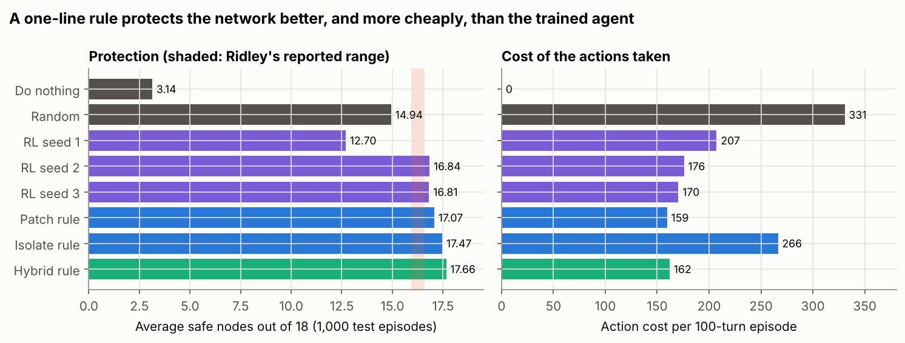
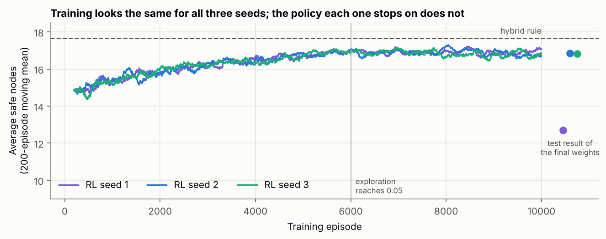
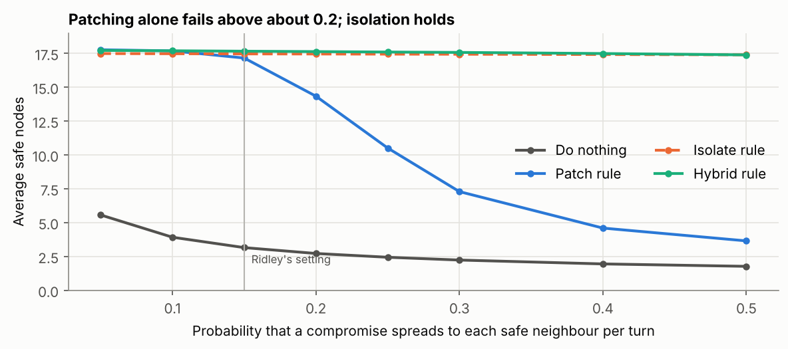
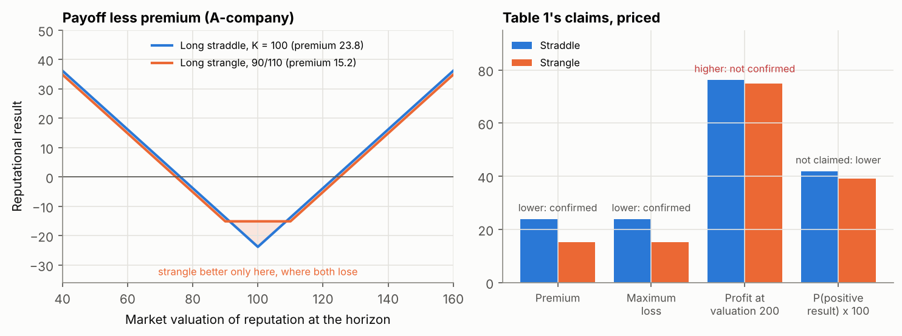

Unit 11: Future Trends in Security and Risk Management
This unit reviews current and emerging trends in security and risk management, drawing on economic theory, behavioural research, AI and automation, and asks which of them are likely to shape the field. The artefacts below are my evaluation of six trends, two notebooks that test the claims of the AI and economic theory readings, and my individual executive summary for Pampered Pets, which was submitted at the end of this unit, with the tutor’s feedback and my evaluation of it against the team’s status document from Unit 6.
Reflection
Structured using the What? So what? Now what? model (Rolfe, Freshwater and Jasper, 2001).
What?
Unit 11 looked forward. The lecturecast set out emerging trends in the field, the solutions most likely to meet particular objectives and the factors driving the field’s development. The required reading was Pineiro-Chousa et al.’s (2017) options model of reputational risk, Fahimnia et al.’s (2019) review of behavioural operations and supply chain management, Ridley’s (2018) article on machine learning for autonomous cyber defence and Marks’s (2019) guide to choosing a risk management framework. I also read the recommended chapters on reporting and communicating risk (Sutton, 2021, chs 8 and 9; Lyon, 2022) and on risk assessment in environmental management systems (Popov, Popov and Lyon, 2022). I evaluated six trends (Artefact 1), rebuilt Ridley’s experiment (Artefact 2) and priced Pineiro-Chousa et al.’s option positions (Artefact 3). The unit ended with the submission of my executive summary for Pampered Pets, which received 55% (Artefact 4).
So what?
The first thing I noticed was the age of the ‘emerging’ trends. All four journal readings date from 2017 to 2019, and two have already been overtaken. Ridley’s vision of an agent that learns to defend a network by trial and error has moved, in practice, towards systems that find and fix flaws in code: in DARPA’s AI Cyber Challenge the finalists’ systems found 54 of 63 planted vulnerabilities and patched 43, at an average cost of about $152 per task (DARPA, 2025). Marks compares COBIT 5 with an information assurance standard that the NCSC no longer supports (Mackay, 2021), leaves out FAIR, the best-known quantitative framework (The Open Group, 2018), and then finds that none of the frameworks he compared uses quantitative factors. He quotes ‘ISO/IEC 27005:2001’, an edition that never existed (the first was published in 2008), through an endnote that leads to the NCSC, and credits the HMG standard to NIST. Even the reading list adds the issue’s two guest editors as co-authors of Ridley’s article. What this unit added is that a trend is a claim about the future, and a claim made in 2018 has to be read against what has happened since.
Ridley’s article reports one experiment, an agent defending an 18-node network that kept about 16 nodes safe on average, and concludes that reinforcement learning ‘can be used’ to build an autonomous defender. It never compares the agent with a simple rule. When I rebuilt the experiment, two of three trained agents matched his result at about 16.8 safe nodes, which suggests the rebuild is close to the original. The third, trained with the same settings and a different random seed, looked the same during training but managed only 12.7 in testing. A rule that a human analyst could write in one line, patch the compromised node with the most safe neighbours, kept 17.1 nodes safe, and a rule that isolates hubs and patches leaves kept 17.7, at a lower cost than the agents and with no training at all. The agents also never chose to isolate, because the reward charged 10 for isolating and only 5 for patching. That leaves them no answer to a faster attacker: in my tests, patching alone collapsed once the spreading probability passed about 0.2, while the rules that isolate held. Ridley reports the number of safe nodes while the agent was trained on safe nodes minus action costs, and the two measures rank the policies differently. That was the most useful finding of the unit for me: an autonomous defender optimises what it is paid for, so the reward is a risk decision in its own right and needs an owner. I am wary of overstating this, because my rebuild rests on assumptions about details the article leaves out.
Fahimnia et al. (2019) supply the question that Ridley does not ask. They find that ‘decision making in practice continues to be heavily influenced by human judgment, even with regard to highly automated and supposedly objective systems’, and frame the key question as when human judgement ‘should be encouraged or discouraged’. The review stops in June 2018, says nothing about security, rests its view of the future on a survey of ten authors that it calls ‘likely biased’, and gives both 439 and 448 as the number of articles screened. But it explained something from Unit 7. The input that drove the probability of a major quality failure in my executive summary was the quality control detection rate, a measure of how well staff spot faulty batches, with a rank correlation of −0.88. Fahimnia et al. list quality and reliability management among the areas behavioural research has ‘so far’ not explored. The most important number in my quantitative model was a human behaviour, and I had assumed it rather than measured it.
Pineiro-Chousa et al. (2017) bring options theory into reputational risk, treating environmental management as a premium paid for a call on reputational opportunities and a put against reputational threats. The paper never prices an option, so I priced its positions with the Black and Scholes (1973) model, using illustrative inputs. Two of the three claims in its Table 1 for voluntary disclosure held: the position becomes cheaper and its maximum loss falls. The third, a higher maximum reward, failed at every volatility I tried, because the premium saved is always less than the distance the strikes move apart. At a fair price every position has an expected result of zero, so the gain the paper describes must come from the market valuing a company’s reputation differently once it can tell good practice from bad. That is an argument about information, and the option framing adds a vocabulary without prices. What I kept is the asymmetry: preparation is a premium paid before the event, and its value rises with the volatility of reputation. Pampered Pets’ high-profile customers make its reputation volatile, so the cheap premium is a quality and incident record that can be shown within days. The paper’s scenario of mature mandatory reporting is also receding: the EU’s Omnibus I limits sustainability reporting to companies with more than 1,000 employees and €450 million turnover and drops the planned move to reasonable assurance (Mac Cormac et al., 2025). The mandatory disclosure that does apply to Pampered Pets is a personal data breach, which must be reported to the ICO ‘not later than 72 hours after becoming aware of it’ (ICO, no date).
Marks’s (2019) checklist was more useful applied to my own team’s choice. Asked of the ISO 31000 and ISO/IEC 27005 pairing that Group 2 adopted, ‘Is risk evaluated on a quantitative approach?’ gets a no (Group 2, 2025), and the questions on expertise and licensing get a yes for a four-person business. His advice to use ‘the simplest framework that meets their requirements’ supports my Unit 5 conclusion: Cyber Essentials and the GDPR basics first, and a formal framework once the ERP and international supply chain justify it.
The recommended chapters on reporting changed how I read my tutor’s feedback on the executive summary. It scored 10 out of 30 for criticality (‘There is no evident criticality’), 8 out of 20 for sources (‘Very few works are cited’) and lost a mark for ‘over-reliance on images and tables’. Reading this was uncomfortable, mostly because the group report had received almost the same comments seven weeks before I submitted: limitations and gaps ‘should have been acknowledged’, and ‘very recent sources are expected’. I had that feedback and did not apply it to my own work, probably because I treated the summary as a modelling exercise and the feedback as being about the group’s writing. Sutton (2021) says a business case needs the proposed solution, why it would reduce the risk, and a financial breakdown over three to five years. My summary recommended an active-active, multi-region architecture with no cost at all; Unit 10 put it at about £45,000 a year, against about £3,400 for a design that met the requirements better. Lyon (2022) argues for heat maps and bow-ties because decision makers need to see the whole risk pathway, which seems to contradict the tutor. I think the difference is what the visuals carry. My eight tables held 308 of the summary’s 1,079 words, and they carried results without the reasoning or doubts behind them, which is what the criticality criterion looks for. Lyon’s own striped bow-tie shows a second risk: it multiplies severity, likelihood and a control factor and reports the percentage of risk reduced, arithmetic on ordinal scores that Cox (2008) warned against in Unit 2. Popov, Popov and Lyon (2022) present a 79% fall in the standard deviation of environmental significance scores as evidence of success, but one aspect scored at −180 accounts for about 60% of the original variance.
My answer to the unit’s question, set out in Artefact 1, is that AI and automation will be the most influential trend for research, provided its claims are tested against simple baselines and studied together with the question of when people should step in. For a business like Pampered Pets, dependence on a few cloud and software suppliers will matter sooner, and AI will arrive through their products.
Now what?
Five changes follow. First, before I accept that a new technique works, I will ask what simple rule it was compared with, and if there was none I will build one, as in Artefact 2. Second, when a model depends on people, I will treat their behaviour as an input to be measured; for Pampered Pets the seeded-defect test of quality control proposed in Unit 7 is now the most valuable single piece of data. Third, any system that acts on its own, from an automated response rule to a supplier’s AI tool, will have its objective or thresholds written down and owned by a named person. Fourth, every recommendation I write for a decision maker will state in the text its cost over three to five years, its limits and what it does not cover, with tables kept for figures the reader needs to check; Artefact 4 is written this way. Fifth, my end-of-module e-portfolio will use the positions in Artefact 4 in place of the executive summary’s recommendations. At work, I will ask suppliers of AI-based security tools what baseline their detection and response rates were measured against, and who sets the point at which the tool acts without a person.
Artefact 1: Evaluating Emerging Trends in Security and Risk Management
Prepared for the Unit 11 objectives: describe the main emerging trends, explain their potential impact on research, and recommend which will be most influential. Artefacts 2 and 3 test two of the readings in detail.
1. Six trends
The required readings point to three newer trends: AI and automation, behavioural decision making, and economic theory applied to non-financial risk. Marks (2019) and the recommended chapters add two longer-running ones, framework convergence and risk communication, and Units 9 and 10 added a sixth: concentration on a small number of technology suppliers.
| Trend | Evidence | For | Against | Likely influence |
|---|---|---|---|---|
| AI and automation in defence and attack | Ridley (2018); DARPA (2025); NCSC (2025) | Works at machine speed and scale; the NCSC expects the time from disclosure to exploitation, already ‘days’, to shrink further | Training can be unstable, someone has to set the objective, and the experiment tested here was never compared with a simple rule (Artefact 2); attackers gain the same tools | High on research; reaches small firms through suppliers’ products |
| Behavioural decision making and human–machine teaming | Fahimnia et al. (2019) | Explains why models and systems underperform in use; a growing habit of replication | Evidence mostly from laboratory experiments and surveys; the review ends in 2018 and does not cover security | High, as the condition for the first trend |
| Economic and financial theory for non-financial risk | Pineiro-Chousa et al. (2017) | Makes the timing and asymmetry of preparation explicit; links disclosure to reputation | No prices or data; one of its three main claims fails when priced (Artefact 3); mandatory reporting is being scaled back in the EU (Mac Cormac et al., 2025) | Moderate; more vocabulary than method |
| Framework convergence and integrated risk governance | Marks (2019); NIST (2024) | One process for business and technology risk; NIST CSF 2.0 adds a Govern function that ties cyber risk to enterprise risk | Frameworks multiply and guidance on choosing between them is thin; Marks’s comparison was out of date within a few years | Moderate and steady |
| Risk communication and decision support | Sutton (2021); Lyon (2022) | Decisions, not assessments, change risk; business cases force cost and options into the open | Visual scoring tools invite arithmetic on ordinal scales (Cox, 2008); little evidence on which formats lead to better decisions | Moderate, and underrated |
| Concentration on a few cloud and software suppliers | CMA (2025); Regulation (EU) 2022/2554; Units 9 and 10 | Recognises that risk now sits with a few providers; regulation such as DORA, applied since 17 January 2025, forces testing and exit planning | Rules aim at large and financial firms; small customers cannot negotiate terms | High in practice, including for small firms |
2. Impact on research
The trends are converging on one research problem: how to make decisions with systems that act faster than people can check them. Ridley’s own list of hard problems (reasoning over missing and untrustworthy data, establishing human trust in automated systems and designing adaptive systems securely) is as much behavioural and economic as technical. Three consequences for research follow. Results will need baselines and replication, because a learned policy that beats nothing has shown very little (Artefact 2). Field data on how people use and override automated systems will become more valuable than further laboratory studies, which is the direction Fahimnia et al. (2019) propose for operations. And the objective an automated system optimises will need to be studied as a risk decision, since a defender rewarded for cheap actions behaves differently from one rewarded for safe nodes.
Economic theory will influence the field mainly through its concepts. Options thinking helps explain why preparation pays only if it exists before the event, but without prices or data it does not support decisions, and its main claims need testing before they are used (Artefact 3). Framework convergence and communication will keep changing practice without changing the research agenda much.
3. Recommendation
For research, I would recommend AI and automation as the most influential trend, on two conditions: that claims are tested against simple baselines, and that the behavioural question of when people should step in is studied with it. The NCSC’s judgement of a ‘digital divide’ between systems that keep pace with AI-enabled threats and a large proportion that do not (NCSC, 2025) suggests where the effects will fall. For practice in a business the size of Pampered Pets, supplier concentration will matter sooner. Its main systems will be rented, so its exposure to AI, both as threat and as defence, comes through the shop platform, email and accounting providers it chooses and the exit terms it accepts. The practical step is the same either way: choose suppliers whose security features are on by default, and keep a tested copy of the business’s data outside any one of them, as recommended in Unit 10.
Artefact 2: Reproducing Ridley’s Autonomous Cyber Defence Experiment
Python notebook: unit11_ridley_autonomous_defence.ipynb. Rebuilds the experiment in Ridley (2018) from its description: the 18-node network in Figure 3, three node conditions, three actions costing 0, 5 and 10, spreading probability 0.15, random intrusion probability 0.01 and 100-turn episodes. The article’s source code is an internal NSA report, so the order of play and the timing of a patch were assumed and are stated in the notebook. Every policy faces the same 1,000 test episodes.
1. Checking the article
The worked probabilities for spreading (0.252, 0.375 and 0.752) and intrusion (0.13) are correct. The chance that a whole episode passes without any intrusion is printed as (0.9818)100, although the stated intrusion probability of 0.01 gives (0.9918)100. Both are effectively zero, so the conclusion stands.
2. The trained agent against simple rules

| Policy | Average safe nodes (of 18) | Action cost per episode | Reward per episode |
|---|---|---|---|
| Do nothing | 3.14 | 0 | 314 |
| Random valid action | 14.94 | 331 | 1,163 |
| RL agent, seed 1 (ε = 0.05) | 12.70 | 207 | 1,062 |
| RL agent, seed 2 (ε = 0.05) | 16.84 | 176 | 1,508 |
| RL agent, seed 3 (ε = 0.05) | 16.81 | 170 | 1,511 |
| Patch rule | 17.07 | 159 | 1,548 |
| Isolate rule | 17.47 | 266 | 1,480 |
| Hybrid rule: isolate hubs, patch leaves | 17.66 | 162 | 1,604 |
Two of the three agents land just above Ridley’s reported 15.9 to 16.6, so the rebuild is close to the original. The third, with identical settings, did much worse in testing although its training looked the same as the others’ (section 3); the article found similar instability when a run 20 times longer scored lower. Left to choose, none of the agents ever isolated a node (the isolations at ε = 0.05 are random exploration), because under the article’s costs isolating and then patching costs 15 against 5 for patching. Reward is safe nodes per turn minus action costs, summed over the episode, which is what the agents were trained on; the isolate rule protects more nodes than the agents but earns less reward. The patch rule and the hybrid rule protect more nodes at a lower cost, with no training.
3. Training

4. When the attacker spreads faster

The article warns that above some spreading rate the agent ‘cannot protect the network even if it performed the optimal actions’. That holds for a defender that only patches. A defender that isolates the node it is about to fix holds the network at every rate tested, because isolation stops the spread at once. Whether that is worth the cost is a choice the reward makes on the defender’s behalf.
The model shares the article’s limits: all nodes are equally valuable, the attacker has no strategy, one action is allowed per turn, and the defender sees every node’s condition, although Ridley’s own first assumption is that the adversary ‘can always get inside the system’ and can only be found by combining many sensors. The test of a learned defender should be the simplest rule an analyst would write, under the same conditions.
Artefact 3: Testing Pineiro-Chousa et al.’s Options View of Reputational Risk
Python notebook: unit11_options_reputation_check.ipynb. Prices the option positions described by Pineiro-Chousa et al. (2017) with the Black and Scholes (1973) model, using a reputation index of 100, a one-year horizon, no discounting and 30% volatility. Reputation is not traded, so the prices only test whether the paper’s claims are consistent; they are not a valuation of reputation.

| Claim in the paper | Result when priced |
|---|---|
| The premium rises with the market’s volatility | Confirmed: a straddle costs 8.0 at 10% volatility and 39.5 at 50% |
| Voluntary disclosure lowers the premium (Table 1) | Confirmed: 23.8 for the straddle, 15.2 for the strangle |
| Voluntary disclosure lowers the maximum loss (Table 1) | Confirmed: the maximum loss is the premium |
| Voluntary disclosure raises the maximum reward (Table 1) | Not confirmed: the strangle earns 1.3 less in both tails at 30% volatility, and less at every volatility tested; its chance of a positive result also falls from 41.8% to 39.2% |
| A B-company’s net effort under mandatory reporting is ‘around zero’ (Table 2) | Consistent: between −1.9 and 0 for the strikes tested, and exactly zero at a single strike by put-call parity |
At a fair price every position has an expected result of zero. If disclosure lowers the cost of environmental management and raises the reward, as the paper concludes, the benefit comes from the market valuing a company’s reputation differently once it can tell good practice from bad, not from the shape of the option. The model also assumes that one company’s reputational gain is another’s loss, and that assurance providers take on a client’s bad reputation; an assurer gives an opinion on reported information and may share liability, but customers judge the company.
For Pampered Pets the idea that survives is the asymmetry. Preparation, such as batch testing records, supplier audits and a drafted customer notice for a quality or data incident, is a premium paid in advance, and it is worth more the more volatile the business’s reputation. With customers ‘whose expectations amplify the reputational consequences of any failure’ (Stevens, 2026), the case for paying it is strong, and the 72-hour deadline for reporting a personal data breach (ICO, no date) means a company cannot wait to see how an incident develops before deciding what to say.
Artefact 4: Final Project: Executive Summary for Pampered Pets, and Evaluation against the Status Document
Individual assessment submitted at the end of Unit 11 (Stevens, 2026). The status document is the team risk assessment submitted at the end of Unit 6 (Group 2, 2025).
The executive summary extended the team’s qualitative assessment with quantitative modelling. It estimated the annual probability of quality failures with a Monte Carlo simulation and of supply chain disruption with a fault tree, proposed an active-active, multi-region cloud architecture to meet a 24/7 availability requirement with recovery time and recovery point objectives under one minute, and used a weighted sum to recommend Microsoft Azure as the platform, with vendor lock-in to be mitigated through containerisation, open APIs and portability testing.
Tutor feedback
Feedback from Dr Maria Alvanou, 27 January 2026. Grade: 55% (pass). Strong point: main points covered. Point to develop further: criticality.
| Criterion (weighting) | Mark | Tutor’s comments |
|---|---|---|
| Knowledge and understanding (30%) | 18 | Covers basic points but lacks the required depth. The justification for the methods chosen and the GDPR needed more specific explanation, supported by more theory. |
| Criticality (30%) | 10 | No evident criticality. Gaps should have been shown, and the proposed solutions themselves questioned. |
| Use of relevant sources (20%) | 8 | Very few works are cited. |
| Structure and presentation (10%) | 9 | Well written, but over-reliant on images and tables; more text was needed. |
| Academic integrity (10%) | 10 | No issues. |
Evaluation against the status document
Against the status document, the summary was a real step forward. The team report had rated every risk on a qualitative matrix and stated that it did not consider quantitative metrics because no monetary values were given (Group 2, 2025). The summary showed that probabilities could be estimated from bounded expert judgement, and it turned the team’s general advice to ‘partner with cloud providers’ into a specific architecture and platform choice.
Its weaknesses were the ones the tutor had already identified in the team report on 8 December 2025: limitations and gaps were not acknowledged, and few sources supported the argument. The summary cites four sources, one of them a LinkedIn article, and its regulatory section cites Article 5 of the EU GDPR from an unofficial website, when Pampered Pets is a UK business subject to the UK GDPR and the ICO. It also lost touch with the team’s plan. The status document recommended phased digitalisation starting with security policy, training and the network; the summary went straight to a multi-region architecture that the business in the status document, with no security measures and data on two local computers, had no way to run. Units 7 to 10 tested each part of the summary in turn:
| Element | Executive summary | What later work found | Revised position |
|---|---|---|---|
| Quality model (Monte Carlo) | Any quality event 21.6% a year, ±0.15% | Unit 7: the ± was simulation error; the experts’ ranges give 18.4% to 24.9%, and the quality control detection rate drives the result | Report ranges, and measure the detection rate with a seeded-defect test |
| Supply disruption (fault tree) | Short 18.7%, prolonged 6.0% | Unit 11: the gates were never shown. Both figures can be reproduced if an e-commerce outage has no failover branch and a warehouse outage whose failover fails counts as both short and prolonged. Events are assumed independent, while Unit 10 found that common-cause events matter most | Show the gates, and model common-cause events separately |
| Recovery objectives and architecture | Active-active, multi-region; RTO and RPO under one minute | Unit 9: no business impact analysis supported the objectives; the BIA gave a maximum tolerable outage of 72 hours. Unit 10: active-active cost about £45,000 a year and left the same 28% five-year chance of losing the order data for good as the provider’s defaults | Backup and restore, plus a copy every 15 minutes at a second provider under separate credentials, with daily reconciliation against payment records: a median of about £3,400 a year, plus about £800 for reconciliation |
| Platform choice (weighted sum) | Azure 4.35, AWS 4.20, Google Cloud 3.85 | Unit 7: arithmetic errors (4.45, 4.30, 3.90), and the ranking depends on whether the lock-in criterion counts for or against a platform, and on the method used | State each criterion’s direction; choose the provider on exit terms and recovery, not a weighted score alone |
| Vendor lock-in | Containerisation, open APIs, portability testing | Unit 10: measures for firms that build software; Pampered Pets will rent its systems | An exit plan: open-format exports, the domain kept with its registrar, and a restore at a second provider rehearsed twice a year |
| Regulation | GDPR principles (Article 5) | Units 5 and 6: the UK GDPR, PECR, PCI DSS and Cyber Essentials apply, each with named evidence | A register of obligations, including the ICO’s 72-hour breach reporting |
| People and fraud | Not covered | Unit 8 modelled supplier impersonation fraud, a risk that the move to international suppliers adds | A call-back rule for any change to supplier bank details |
The pattern across the table is that each number in the summary was presented without the assumption that produced it. Almost every correction came from asking what a figure measured and what it would cost, which are the questions a client and a marker both ask. The revised positions are the ones I will carry into the end-of-module e-portfolio.
References
Black, F. and Scholes, M. (1973) ‘The pricing of options and corporate liabilities’, Journal of Political Economy, 81(3), pp. 637–654. Available at: https://doi.org/10.1086/260062 (Accessed: 3 October 2026).
Competition and Markets Authority (CMA) (2025) Cloud services market investigation: summary of final decision, 31 July. London: CMA. Available at: https://assets.publishing.service.gov.uk/media/688b20e6ff8c05468cb7b120/summary_of_final_decision.pdf (Accessed: 3 October 2026).
Cox, L.A. (2008) ‘What’s wrong with risk matrices?’, Risk Analysis, 28(2), pp. 497–512. Available at: https://doi.org/10.1111/j.1539-6924.2008.01030.x (Accessed: 3 October 2026).
Defense Advanced Research Projects Agency (DARPA) (2025) ‘AI Cyber Challenge marks pivotal inflection point for cyber defense’, DARPA news, 8 August. Available at: https://www.darpa.mil/news/2025/aixcc-results (Accessed: 3 October 2026).
Fahimnia, B., Pournader, M., Siemsen, E., Bendoly, E. and Wang, C. (2019) ‘Behavioral operations and supply chain management – a review and literature mapping’, Decision Sciences, 50(6), pp. 1127–1183. Available at: https://doi.org/10.1111/deci.12369 (Accessed: 3 October 2026).
Group 2 (2025) A risk assessment report for Pampered Pets based on ISO/IEC 27005:2022 and ISO 31000:2018. Unpublished team report, Security and Risk Management module. University of Essex Online.
Information Commissioner’s Office (ICO) (no date) Personal data breaches: a guide. Wilmslow: ICO. Available at: https://ico.org.uk/for-organisations/report-a-breach/personal-data-breach/personal-data-breaches-a-guide/ (Accessed: 3 October 2026).
Lyon, B. (2022) ‘Communicate risk’, in Popov, G., Lyon, B.K. and Hollcroft, B.D. Risk assessment: a practical guide to assessing operational risks. 2nd edn. Hoboken, NJ: John Wiley & Sons, ch. 20. Available at: https://www.oreilly.com/library/view/risk-assessment-2nd/9781119755920/ (Accessed: 3 October 2026).
Mac Cormac, S.H., Helmstädter, F., Tybus, J. and Bartels, T. (2025) ‘EU Sustainability Omnibus I – “Detailed Omnibus” adopted: what the final CSRD/CSDDD deal means for companies’, Morrison Foerster client alert, 22 December. Available at: https://www.mofo.com/resources/insights/251222-eu-sustainability-omnibus-i-detailed-omnibus (Accessed: 3 October 2026).
Mackay, M. (2021) ‘Cyber risk assessment in a post-IS1 world’, BCS, The Chartered Institute for IT, 6 October. Available at: https://www.bcs.org/articles-opinion-and-research/cyber-risk-assessment-in-a-post-is1-world (Accessed: 3 October 2026).
Marks, L. (2019) ‘The optimal risk management framework: identifying the requirements and selecting the framework’, ISACA Journal, 1, pp. 40–45. Available at: https://www.isaca.org/resources/isaca-journal/issues/2019/volume-1/the-optimal-risk-management-framework-identifying-the-requirements-and-selecting-the-framework (Accessed: 3 October 2026).
National Cyber Security Centre (NCSC) (2025) Impact of AI on cyber threat from now to 2027, 7 May. London: NCSC. Available at: https://www.ncsc.gov.uk/report/impact-ai-cyber-threat-now-2027 (Accessed: 3 October 2026).
National Institute of Standards and Technology (NIST) (2024) The NIST Cybersecurity Framework (CSF) 2.0. NIST Cybersecurity White Paper 29. Gaithersburg, MD: NIST. Available at: https://doi.org/10.6028/NIST.CSWP.29 (Accessed: 3 October 2026).
Pineiro-Chousa, J., Vizcaíno-González, M., López-Cabarcos, M.Á. and Romero-Castro, N. (2017) ‘Managing reputational risk through environmental management and reporting: an options theory approach’, Sustainability, 9(3), article 376. Available at: https://doi.org/10.3390/su9030376 (Accessed: 3 October 2026).
Popov, G., Popov, T. and Lyon, B. (2022) ‘Risk assessment applications in Lean Six Sigma and environmental management systems’, in Popov, G., Lyon, B.K. and Hollcroft, B.D. Risk assessment: a practical guide to assessing operational risks. 2nd edn. Hoboken, NJ: John Wiley & Sons, ch. 18. Available at: https://www.oreilly.com/library/view/risk-assessment-2nd/9781119755920/ (Accessed: 3 October 2026).
Regulation (EU) 2022/2554 of the European Parliament and of the Council of 14 December 2022 on digital operational resilience for the financial sector (DORA). Official Journal of the European Union, L 333, 27 December 2022. Available at: https://eur-lex.europa.eu/eli/reg/2022/2554/oj (Accessed: 3 October 2026).
Ridley, A. (2018) ‘Machine learning for autonomous cyber defense’, The Next Wave, 22(1), pp. 7–14. Fort Meade, MD: National Security Agency. Available at: https://www.govinfo.gov/content/pkg/GPO-TNW-22-1-2018/pdf/GPO-TNW-22-1-2018.pdf (Accessed: 3 October 2026).
Rolfe, G., Freshwater, D. and Jasper, M. (2001) Critical reflection in nursing and the helping professions: a user’s guide. Basingstoke: Palgrave Macmillan.
Stevens, I. (2026) Quantitative risk assessment and digital resilience strategy for Pampered Pets: executive summary. Unpublished assignment, Security and Risk Management module. University of Essex Online.
Sutton, D. (2021) Information risk management: a practitioner’s guide. 2nd edn. Swindon: BCS, The Chartered Institute for IT. Chapter 8: Risk reporting and presentation; Chapter 9: Communication, consultation, monitoring and review. Available at: https://www.oreilly.com/library/view/information-risk-management/9781780175751/ (Accessed: 3 October 2026).
The Open Group (2018) Introducing The Open Group Open FAIR™ Risk Analysis Tool. Available at: https://blog.opengroup.org/2018/03/29/introducing-the-open-group-open-fair-risk-analysis-tool/ (Accessed: 3 October 2026).